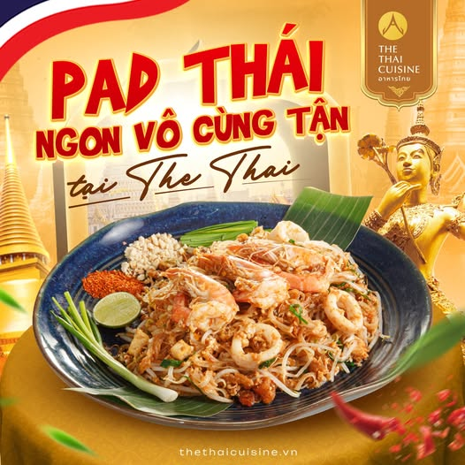

Chúng tôi chuyên phục vụ các món ăn Thái Lan truyền thống với hương vị đậm đà và nguyên liệu tươi ngon. Hãy đến và trải nghiệm ẩm thực Thái tuyệt vời tại nhà hàng của chúng tôi!
Địa chỉ: Lô E1, Đường Tôn Đức Thắng, Phường Trần Phú, TP. Quảng Ngãi
Điện thoại: 0813434798
Email: info@thethaicuisine.vn
Hãy theo dõi chúng tôi trên mạng xã hội để cập nhật những món ăn mới và ưu đãi đặc biệt!
Trước khi gửi lời chào tạm biệt thì hãy thử qua món bestseller bên em nhé:
Pad Thái - Món mì xào truyền thống với hương vị đặc trưng của Thái Lan, kết hợp giữa mì gạo, tôm, đậu phụ, trứng và nước sốt chua ngọt. Nhưng không thể thiếu 1 nhân viên bestseller của shop từng 1 mình cân cả đám anh hùng và anh ấy phải dưỡng thương vài tháng vì
chơi không lại team địch có homer bay nề anh ấy bị làm chậm không thể chạy nhanh hơn dưới đây là hình ảnh của
nhân viên ấy

“Đây chính là nhân viên huyền thoại của The Thai Cui si mê
— người có nụ cười tươi đến mức làm tan cả cục đá trong ly trà Thái! Chỉ
cần bước vào quán là bạn sẽ nghe thấy tiếng ‘xin chào quý khách’ vang lên
như bản nhạc mở đầu cho một bữa ăn đầy hạnh phúc. Tay cầm menu mà cứ tưởng
đang phát bùa mê
— khách nào nhìn thấy cũng tự nhiên gật đầu gọi thêm món. Nếu bạn chưa
từng được phục vụ bởi anh chàng này, nghĩa là bạn chưa trải nghiệm đủ “đặc
sản nụ cười Thái” đâu!
Anh ấy không chỉ là nhân viên phục vụ, mà còn là “nghệ sĩ” tạo nên những khoảnh khắc vui vẻ và ấm áp cho khách hàng. Mỗi lần anh ấy mang món ăn ra đều kèm theo một câu chuyện hài hước hoặc một trò đùa nhẹ nhàng, khiến bữa ăn trở nên thú vị hơn bao giờ hết. Chắc chắn bạn sẽ không thể quên được trải nghiệm này!
Tới thì mình chúc bạn có những trải nghiệm tuyệt vời tại The Thai Cuisine nhé!
Hẹn gặp lại bạn trong những lần ghé thăm tiếp theo!
Hết tập rồi, tạm biệt!